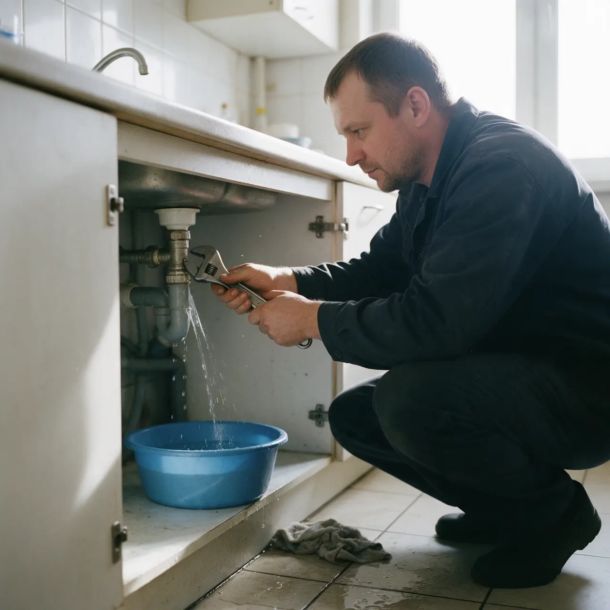
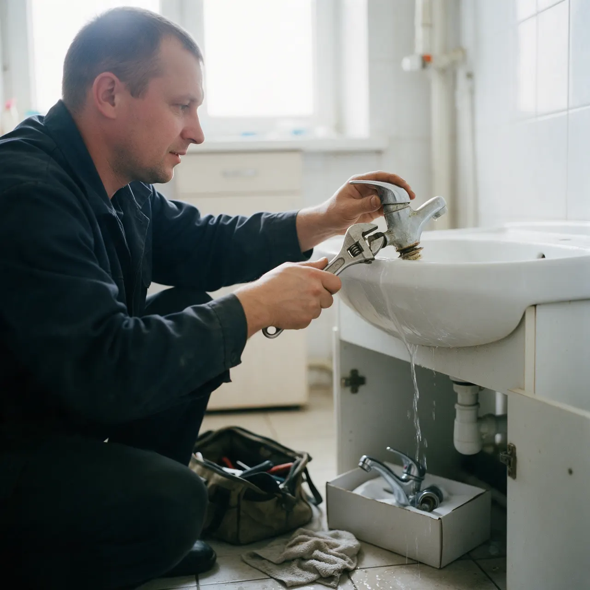
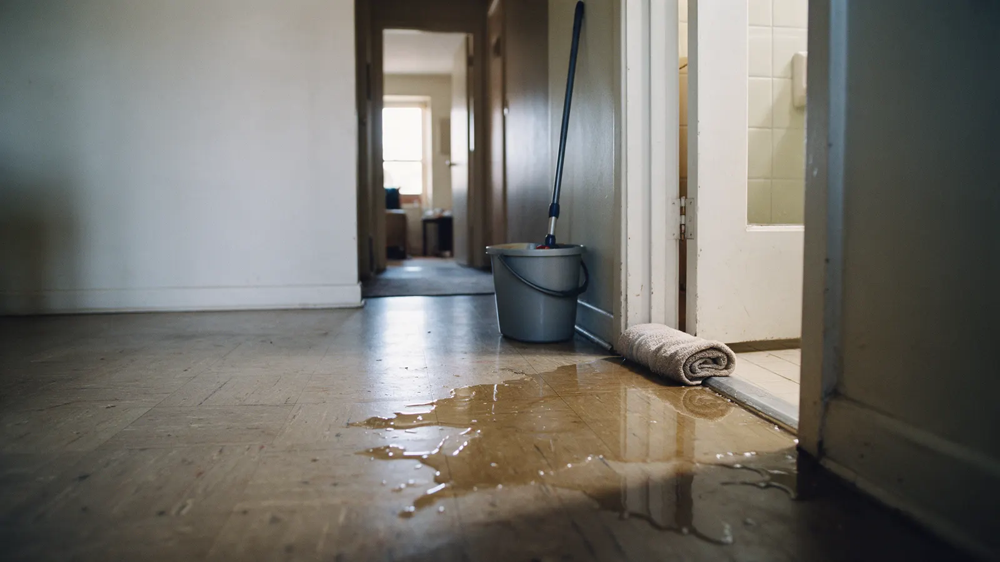
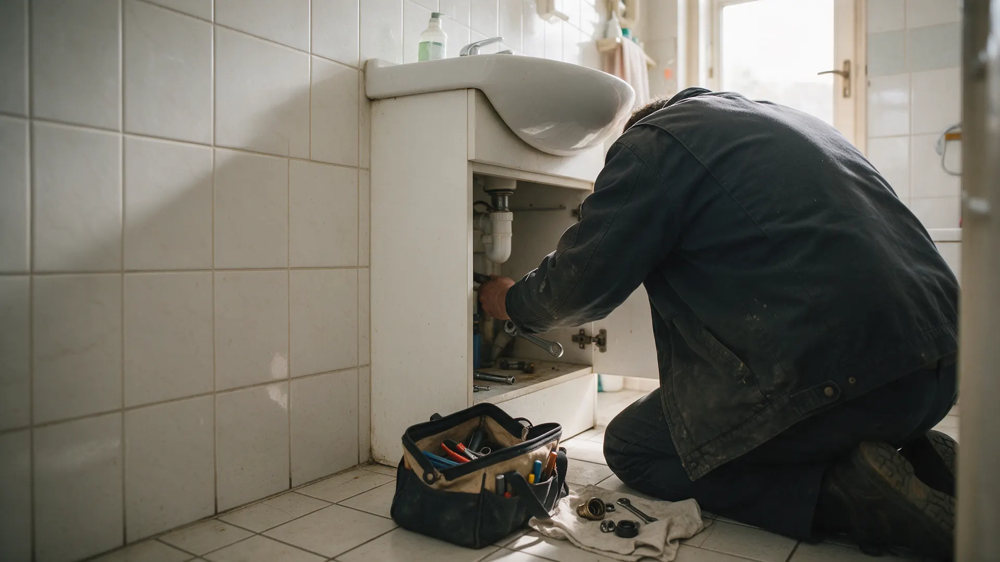
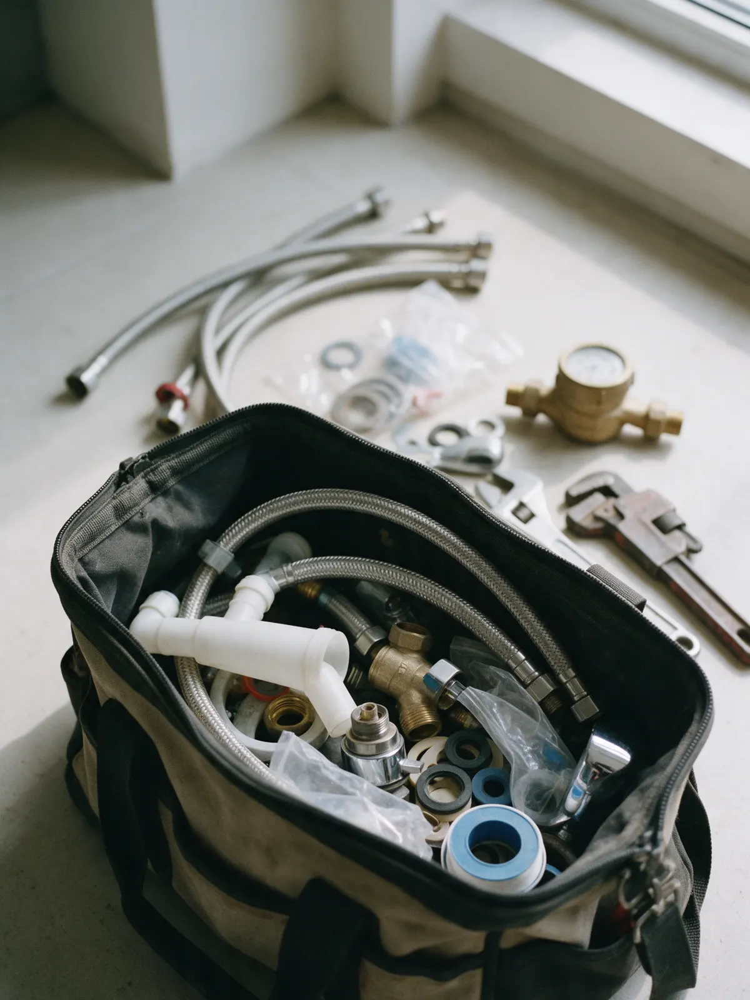
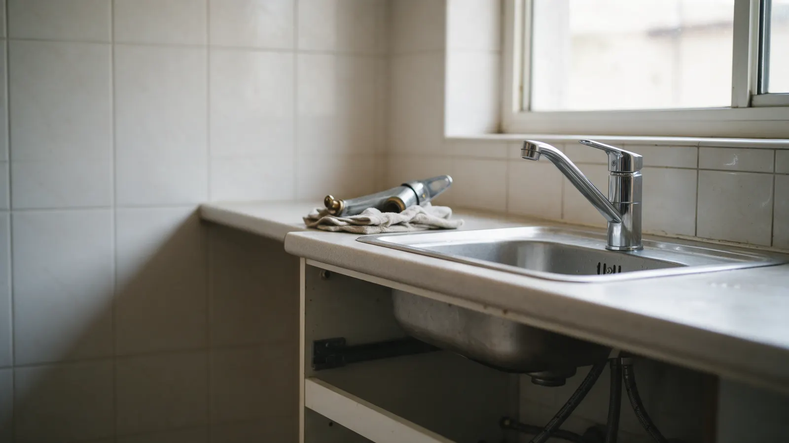

Сантехник на дом в Екатеринбурге: звоните в любое время
Течёт кран или не закручивается соединение? Позвоните и опишите, что случилось: берёмся и за мелкие вызовы.
Течь не ждёт до завтра
Вода уходит к соседям
За ночь она находит дорогу к соседям снизу. Тогда это уже не кран за полчаса, а чужой потолок и ваш разговор с ними.
Мелочь, за которую не берутся
Прикрутить кран, подтянуть соединение. Обзваниваешь мастеров, а вода всё капает.
Цену узнаёте после работы
Когда смеситель уже разобран, спорить о сумме поздно. Соглашаетесь на любую, лишь бы собрали обратно.
Мы берёмся и за мелкие вызовы. Позвоните, опишите, что случилось: мастер приедет во время и сам купит нужные материалы.


Вы позвонили и описали, что случилось
Двух фраз достаточно: что течёт или не работает. Дальше мастер решает, что взять с собой.
Мастер выехал и сам купит материалы
Бегать в магазин за подводкой или краном не нужно: клиенты пишут, что материалы мастер покупает сам.
Приехал во время и сделал работу
Быстро и аккуратно: так пишут о нас на Яндекс.Картах, отзывы ниже.
Какие работы берём
Цена зависит от работы и деталей, поэтому называем её по телефону, когда узнаём, что случилось. Ниже то, с чем к нам обращаются чаще всего.
Краны и смесители
- Прикрутить или заменить кранКапает, не закручивается, течёт у основанияуточнить
- Заменить смесительКухня или ваннаяуточнить
- Починить душШланг, лейка, переключательуточнить
Счётчики и ванная
- Заменить счётчики водыГорячая и холодная водауточнить
- Сантехника в ваннойТечь, подключение, заменауточнить
- Реставрация ваннОбновление покрытияуточнить
Нужной работы нет в списке? Позвоните и опишите её: скажем, возьмёмся ли и сколько это будет стоить. Оплата картой возможна.


Как работаем, по отзывам клиентов
- Приезжаем во время«Приехали во время и сделали всё быстро и качественно» – из отзыва на Яндекс.Картах.
- Материалы покупает мастерКлиенты пишут, что мастер сам покупает нужные материалы и быстро делает работу.
- Берёмся и за мелкие вызовыПрикрутить кран, подтянуть соединение: не отказываемся там, где другие не берутся.
- Принимаем вызовы круглосуточноЧасы работы указаны на карточке на Яндекс.Картах: звоните в любое время.
Что пишут на Яндекс.Картах
-
«Несколько телефонов обзвонили все отказывались прикрутить кран, но не эта фирма. Пришёл за 5 мин прикрутил кран и ушёл.»
-
«Нужно было поменять счётчики ГВС и ХВС. Созвонились, договорились. Приехали во время и сделали всё быстро и качественно. Очень рекомендую»
-
«Пользовались услугами данной компании два раза за неделю. Спасибо ребятам за професиональное отношение к делу. Они самостоятельно купили материалы, и оперативно сделали работу! Будем обращаться ещё»
Отзывы взяты с карточки на Яндекс.Картах дословно, длинные – целым фрагментом.
Позвоните и опишите, что случилось
Принимаем вызовы круглосуточно. Один звонок – и мастер выезжает.
Скажите, что течёт или не работает: так мастер сразу поймёт, что взять с собой.